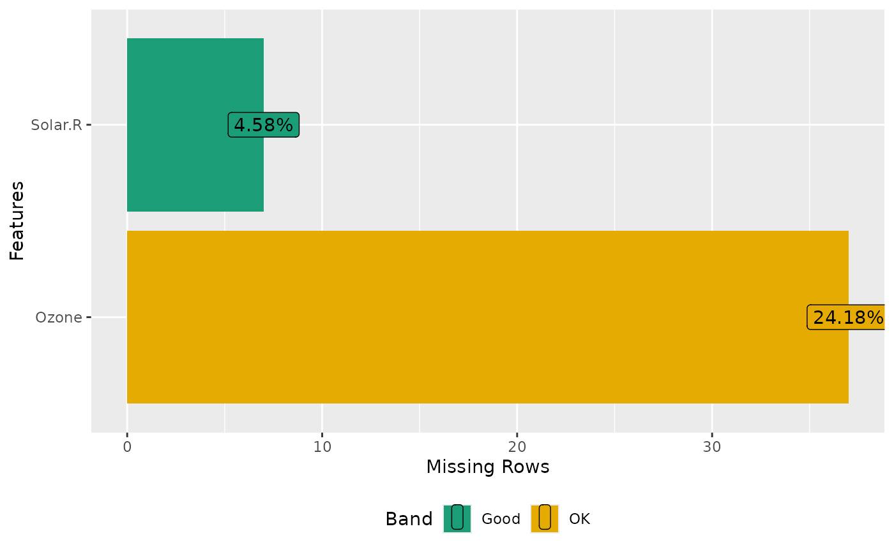

Plot missing value profile
plot_missing.RdThis function returns and plots frequency of missing values for each feature.
plot_missing( data, group = list(Good = 0.05, OK = 0.4, Bad = 0.8, Remove = 1), missing_only = FALSE, geom_label_args = list(), title = NULL, ggtheme = theme_gray(), theme_config = list(legend.position = c("bottom")) )
Arguments
| data | input data |
|---|---|
| group | missing profile band taking a list of group name and group upper bounds. Default is |
| missing_only | plot features with missing values only? Default is |
| geom_label_args | a list of other arguments to geom_label |
| title | plot title |
| ggtheme | complete ggplot2 themes. The default is theme_gray. |
| theme_config | a list of configurations to be passed to theme. |
Value
invisibly return the ggplot object
See also
Examples
plot_missing(airquality)plot_missing(airquality, missing_only = TRUE)## Shrink geom_label size library(ggplot2) plot_missing(airquality, geom_label_args = list("size" = 2, "label.padding" = unit(0.1, "lines")))